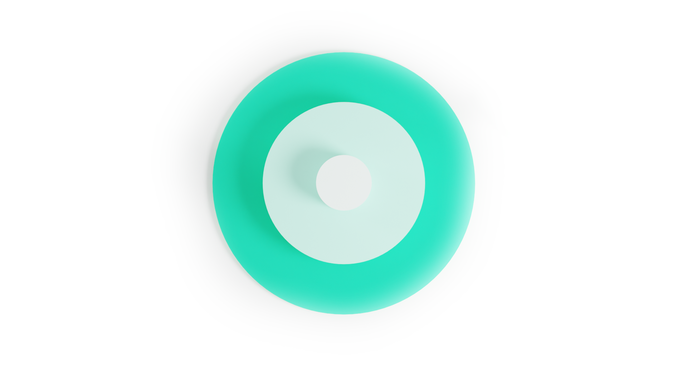
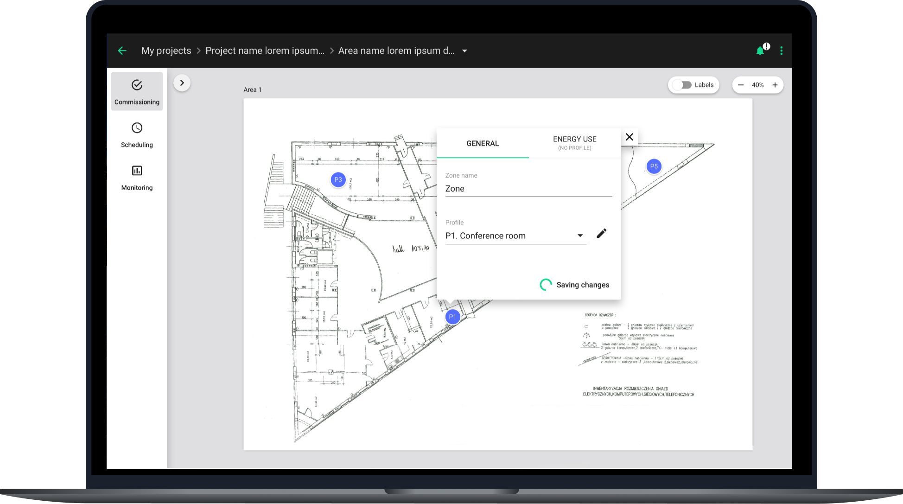
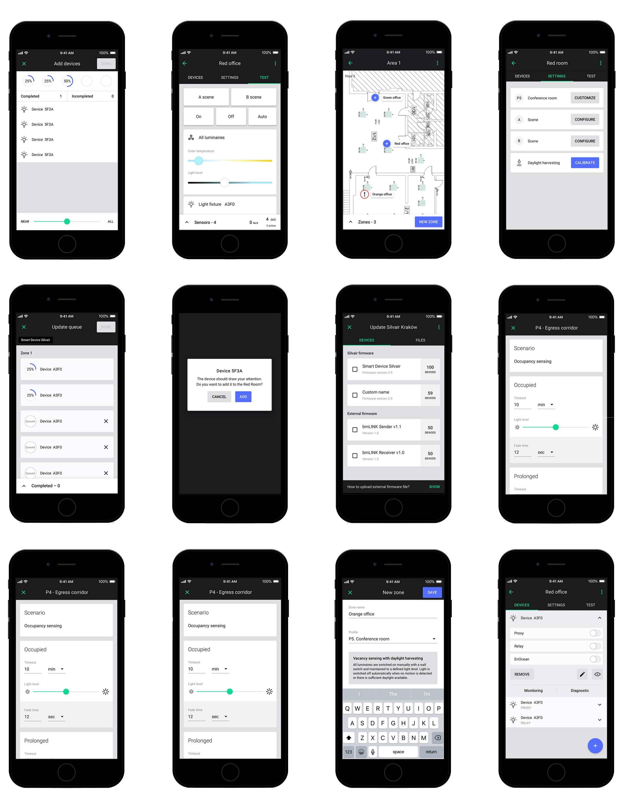
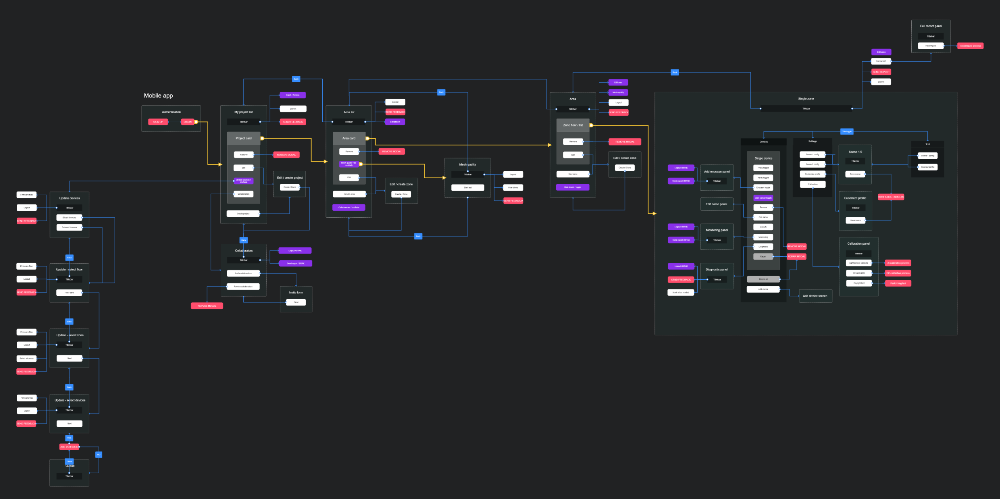
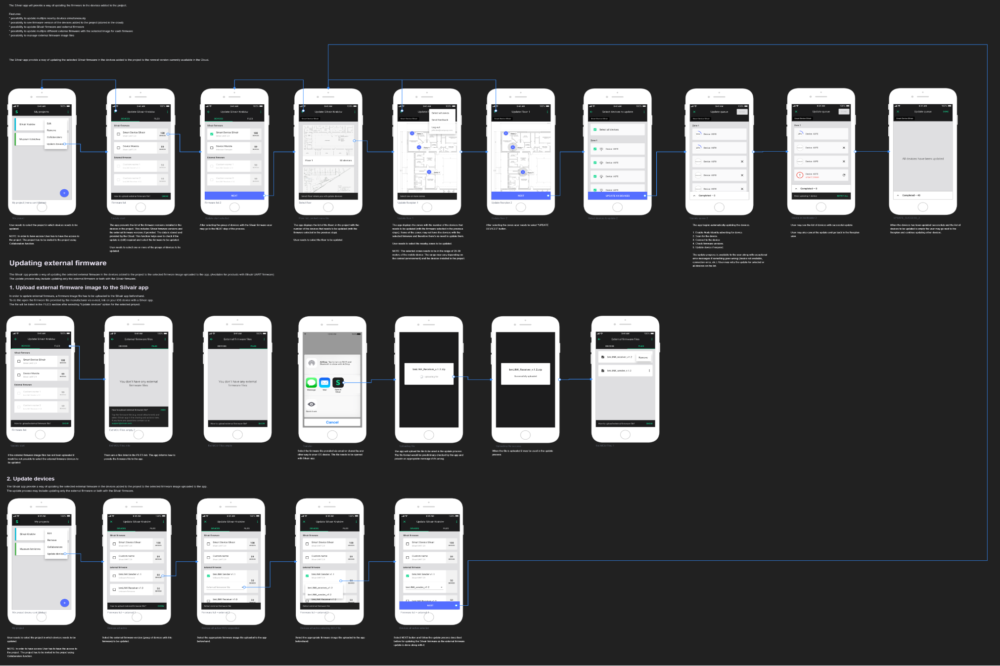

Back
Back
Lighting control platform for commercial spaces, built on the globally interoperable Bluetooth Mesh standard.
As one of the Senior UX designers, I contributed to the development of the Silvair Platform a tool for designing, configuring, and managing lighting networks based on Bluetooth Mesh technology. The platform enables the creation of modern lighting systems in commercial buildings, ensuring reliable operation, flexible deployments and access to advanced data analytics.

The user journey begins with the planning stage. Users create an account and start a new project by setting up their workspace and managing team roles in the Collaborate section. Next, they upload floor plans and organize spaces using a visual canvas that makes it easy to define zones. Once the layout is ready, they assign lighting zones, choose from pre-built control profiles like daylight harvesting, and fine-tune settings to match project requirements.

The mobile app enables seamless on-site commissioning by allowing users to scan for mesh-capable luminaires, sensors, and switches, which are automatically matched to their planned zones. Devices can be quickly added to the mesh using proximity-based lists, streamlining configuration. Daylight sensors can be calibrated, triggers tested, and installations validated in real time. Once deployed, users can compare real-world performance with initial plans, fine-tune parameters, and reassign devices as needed for optimal results.

The UX process began with concept sketches, early research, and collaborative workshops designed to align the team around user needs and business objectives. We facilitated structured design sessions where we explored early ideas and uncovered pain points.

Next, initial user flows and low-fidelity sketches were created to visualize how people would interact with the system across different scenarios. These early artifacts helped define key screens and navigation patterns, ensuring the overall structure supported intuitive and efficient workflows. At this stage, interactive prototypes were also prepared, followed by user testing to validate core assumptions and refine the experience.

During the handoff phase, detailed user flows, high-fidelity mockups, and comprehensive specifications were delivered to support development. Every interaction and screen state was thoroughly documented to ensure clarity and consistency. Close collaboration with the engineering team allowed for iterative feedback and refinement, helping bring the commissioning app to life with precision and confidence.